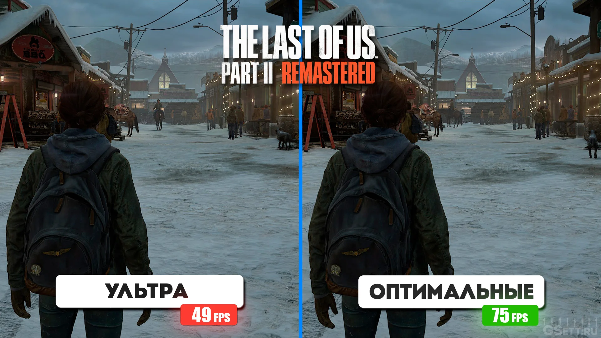

The Last of Us Part II

Optimised settings for The Last of Us Part II:
Dynamic Objects Level Of Detail : High
Characters Level of Detail : High
Environments Level Of Detail : Medium or High
🛈 Has hight impact
on FPS
Dynamic Objects Texture Quality : Medium (For 8GB GPUs)
Characters Texture Quality : Medium (For 8GB GPUs)
Environments Texture Quality : High (For 8GB GPUs)
Visual Effects Quality : Medium or High (For 8GB GPUs)
Texture Filtering : 16x
Spotlights Shadow Resolution : High or Very High
Point Lights Shadow Resolution : High or Very High
Ambient Shadows : High or Very High
Directional Shadow Resolution : High or Very High
Directional Shadow Distance : Medium
Screen Space Shadows Quality : High
Dynamic Screen Space Shadows : On
Contact Shadow Quality : High
Image Based Lighting : On
Bounced Lighting : On
Ambient Occlusion : Quality
Screen Space Reflections : High
Real-Time Reflections Quality : High
Real-Time Cloud Shadow Reflections : On
Screen Space Sub
surface Scattering : On
Refraction Quality : High
Particle Density : Medium
Volumetric Effects Quality : High